1 Union Find (Disjoint Set)
1.1 ¿Qué es una Union Find?
Union-Find es una estructura de datos que mantiene un conjunto de elementos particionados en un número de conjuntos disjuntos (no se solapan los conjuntos), tiene dos operaciones primarias find y union.
- Find: Dado un elemento te dice a que grupo pertenece.
- Union: Junta dos grupos.
1.2 Ejemplo de los imanes
Imaginemos que tenemos un grupo de imanes desordenados:
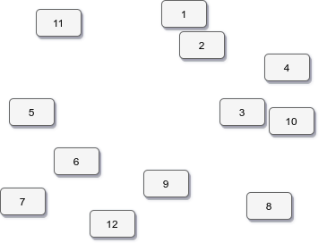
Cada iman será atraido por el iman que este más cerca a este formando grupos
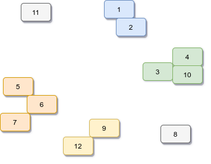
Es así como funciona, cada iman pertenece a su propio grupo de color, y podriamos seguir hasta hacer un solo grupo que contenga a todos los imanes.
1.3 ¿Cuándo y dónde son usadas?
- Algotitmo de kruskal
- Grid percolation
- Conectividad de red
- Least common ancestor en árboles
- Procesamiento de imágenes
1.4 Algotitmo de Kruskal
Dado un grafo \(`G = (V, E)`\) queremos encontrar el árbol recubridor mínimo (Minimum Spaning Tree) en el grafo que puede o no puede ser único. Es un subconjunto de aristas que, formando un árbol incluyen todos los vértices y donde el valor de la suma de todas las aristas del árbol es el mínimo.
Teniendo el siguiente grafo:
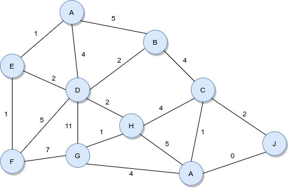
Y siendo un árbol recubridor mínimo:
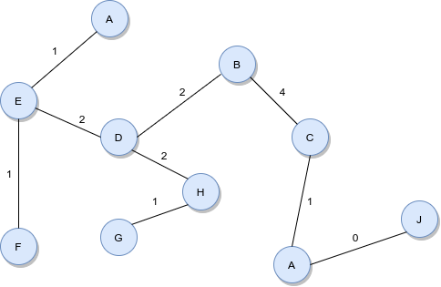
con un peso de 14
El algoritmo de Kruskal es un ejemplo de algoritmo voraz que funciona de la siguiente manera: 1. Ordenar las aristas en orden acendente con su peso. 2. Recorrer las aristas ordenadas, y mirar a que nodos pertenecen, si los nodos ya fueron unificados no los incluimos, y si no, los unificamos. 3 El algoritmo termina cuándo cada arista ha sido procesada o cuándo todos los vértices han sido unificados.
Teniendo el grafo anterior 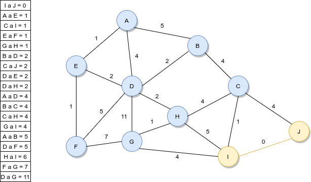 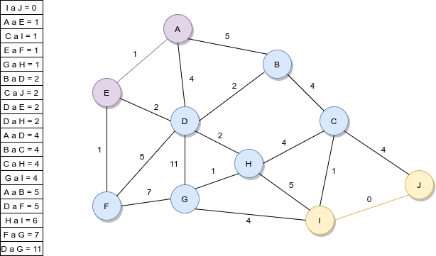 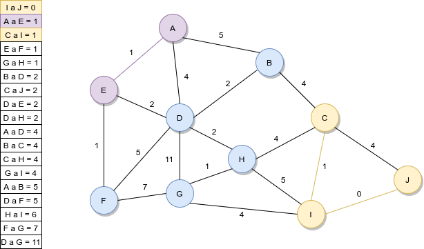 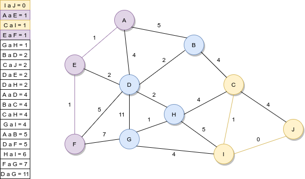 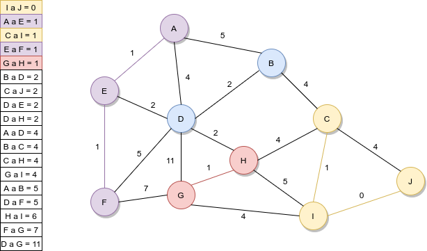 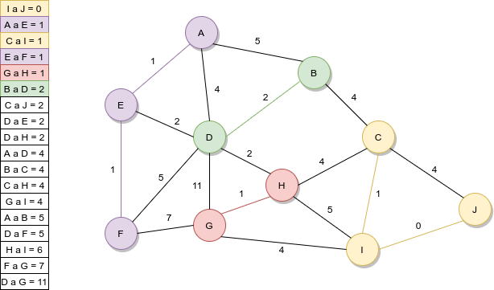
como C y J pertenecen al mismo grupo se crea un ciclo, así que no lo coloreamos.
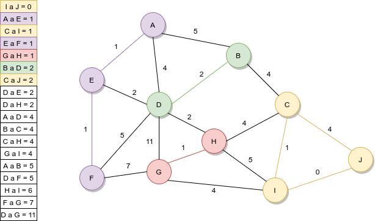
Como D ya pertenece a un grupo unificamos ambos grupos y tomamos un color arbitrario. 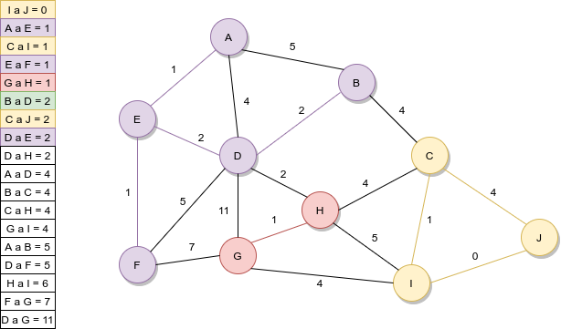
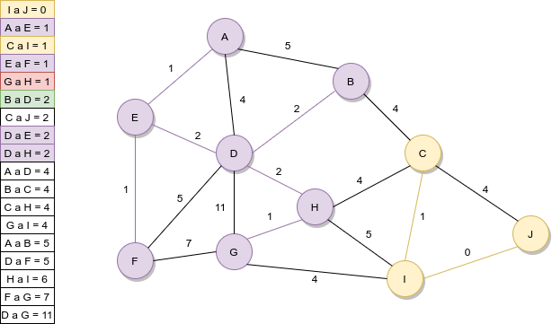 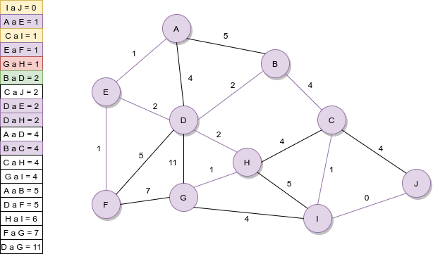
1.5 Análisis de complejidad
| Constuction | \(`O(n)`\) |
|---|---|
| Union | \(`\alpha(n)`\) |
| Find | \(`\alpha(n)`\) |
| Get Component size | \(`\alpha(n)`\) |
| Check if connected | \(`\alpha(n)`\) |
| Count components | \(`O(1)`\) |
\(`\alpha(n)`\) Tiempo constante amortizado.
1.5.1 Detalles de implementación
1.6 Operaciones Find & Union
Para empezar a usar Union Find, primero necesitamos construir un mapeo ente los objetos y los enteros en el rango de \(`[0,n)`\). > Esto no es estrictamente necesario, pero nos ayuda a construir una Union Find basada en arrays.
Asignamos aleatoriamente un mapeo entre los objetos de la izquierda y los números de la derecha.
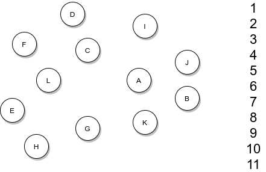
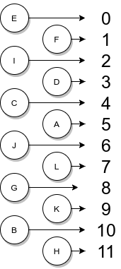
2:41:13 ## Path compression # Implementación en código
p